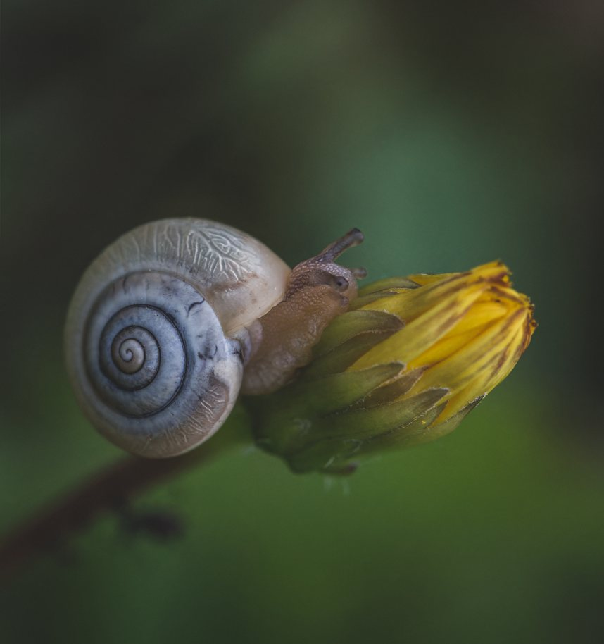
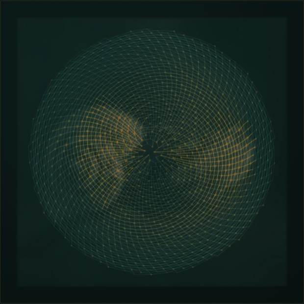
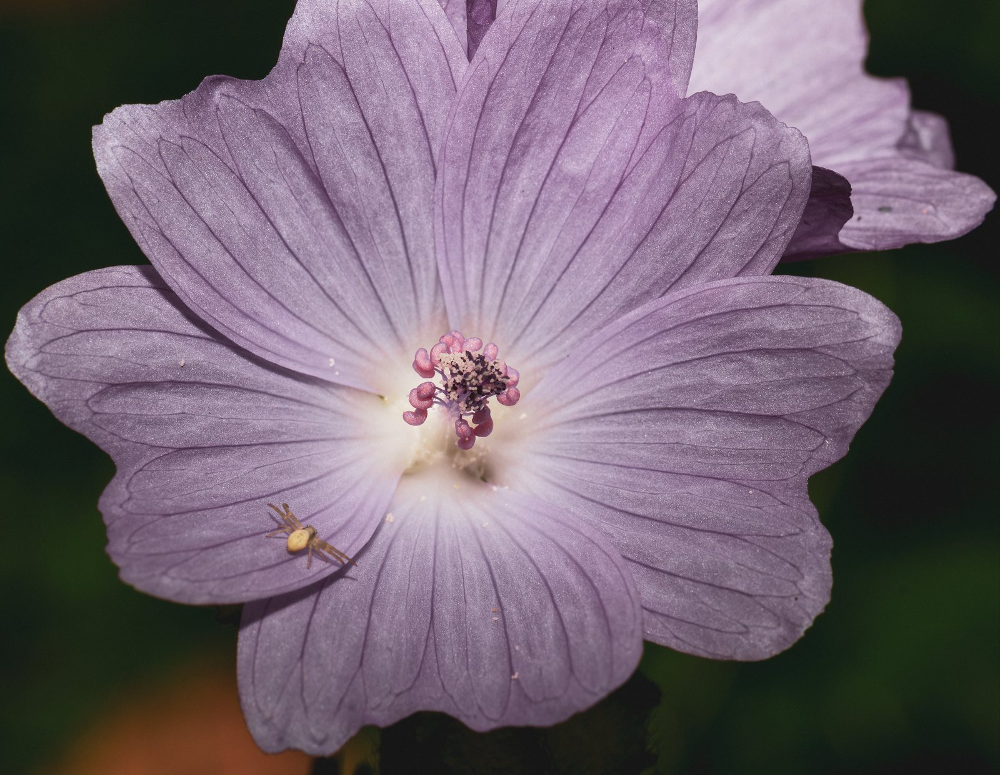
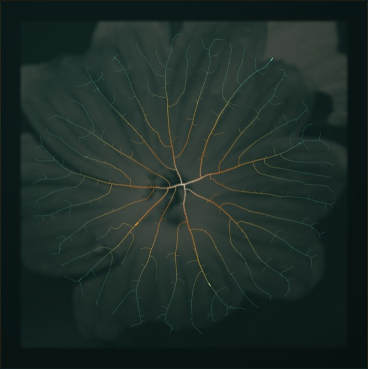
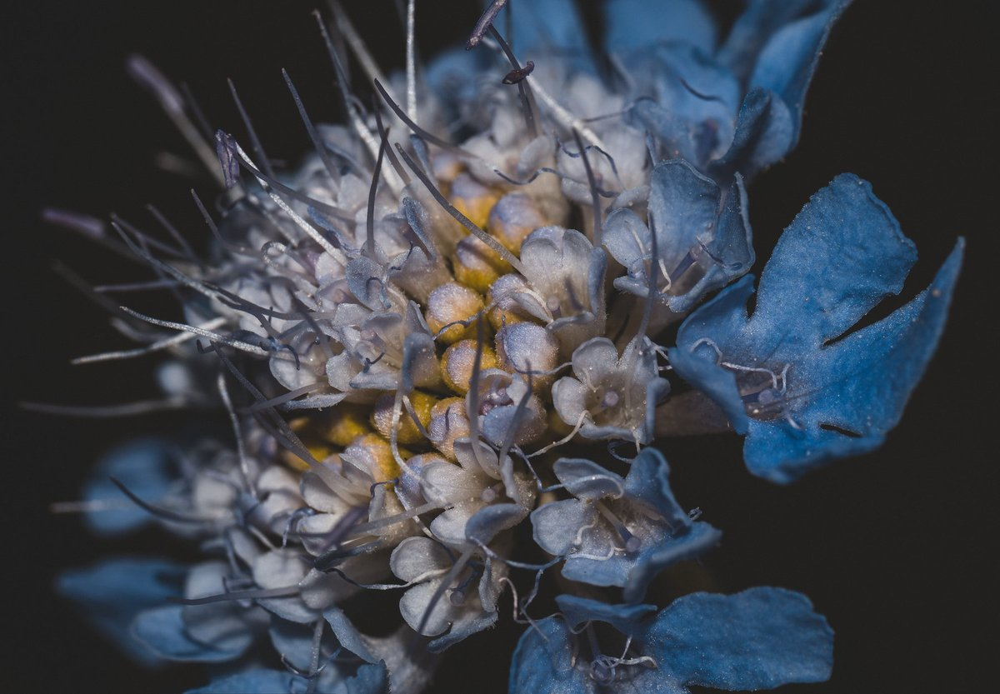
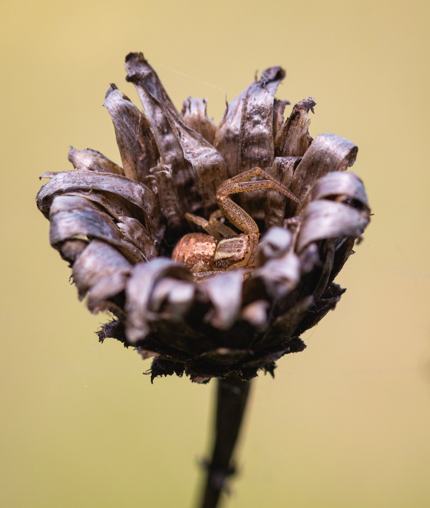
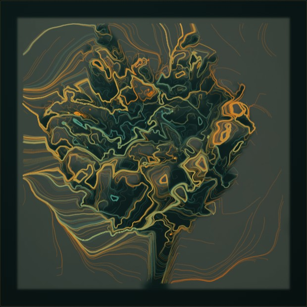
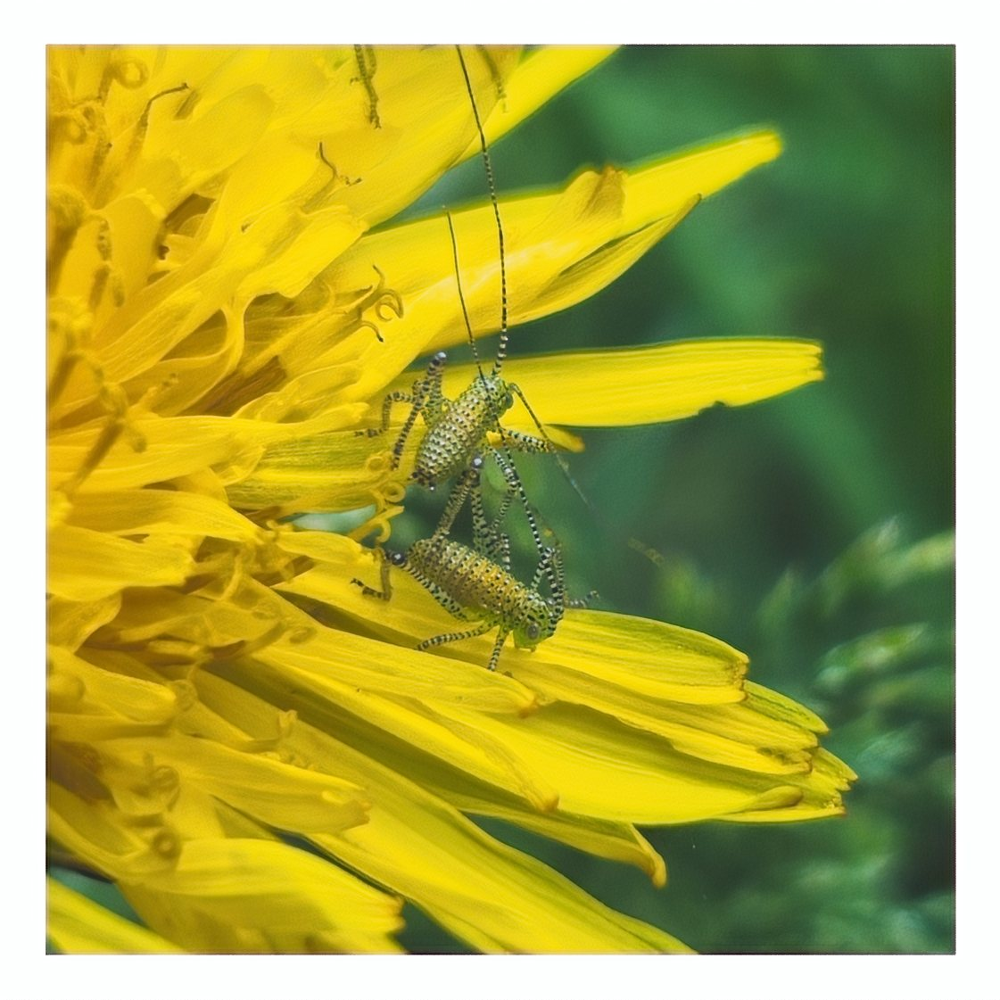
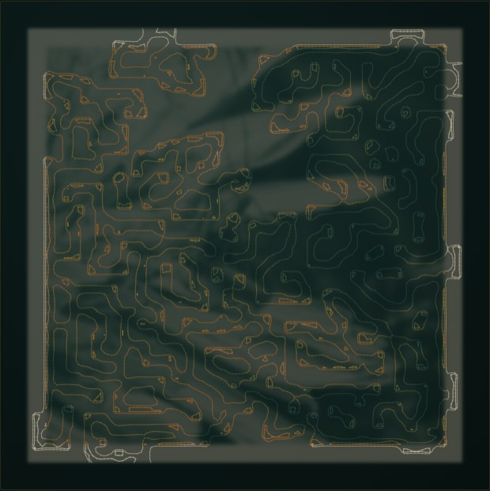
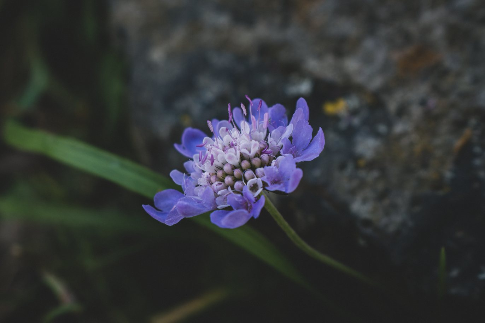

PHOTOGRAPHY BY IAMBETA
The living world, up close.
Every algorithm in the atelier is modeled on something real — a spiral, a vein, the way a seed packs itself in. These are the originals: macro photographs by iamBeTa, whose eye on the small living world is where all of this started. Look closely — then watch the engine just below read them back to you, live, as drawings that never settle the same way twice.
THE ENGINE · LIVE & ENDLESS
It doesn’t sit still. Watch it draw.
The same engine the rest of the site is about, plugged straight in — reading her photographs and drawing them through one organ after another, never the same way twice. Leave it be and it drifts on its own; or take the little tools below and steer it — pick an organ, swap the palette, turn it wild. And because it’s our engine, every drawing it makes can be witnessed (fingerprinted — run it again from the same starting point and you get the exact same result) and pulled down as a pen-plot.










The engine up at the top is the live one.
It reads these photographs the way a person learns to look — the light, the edges, the way the structure flows — and draws something new along those lines, organ after organ, never settling the same way twice. Her photograph becomes the field; the algorithm becomes the pen. Nothing is guessed: each drawing is the same every time you give it the same starting point, and it carries a fingerprint of its own geometry, so you can run it again yourself and get the exact same result instead of just trusting it — press witness and watch it prove itself. The four pairs above are just frames held still from the same engine. The same looking that keeps a machine honest is the looking that makes this beautiful — on this one surface, security and wonder turn out to be the same move.
Go further — open the full atelier · back to the start
Straight from her Bluesky.
The photographs up top are the living world the engine learned to read from — but she hasn’t stopped looking. Here is her work as it lands, pulled live from her feed; every frame links back to her own post.
Loading her latest from Bluesky…
Follow her — @iambeta.bsky.social